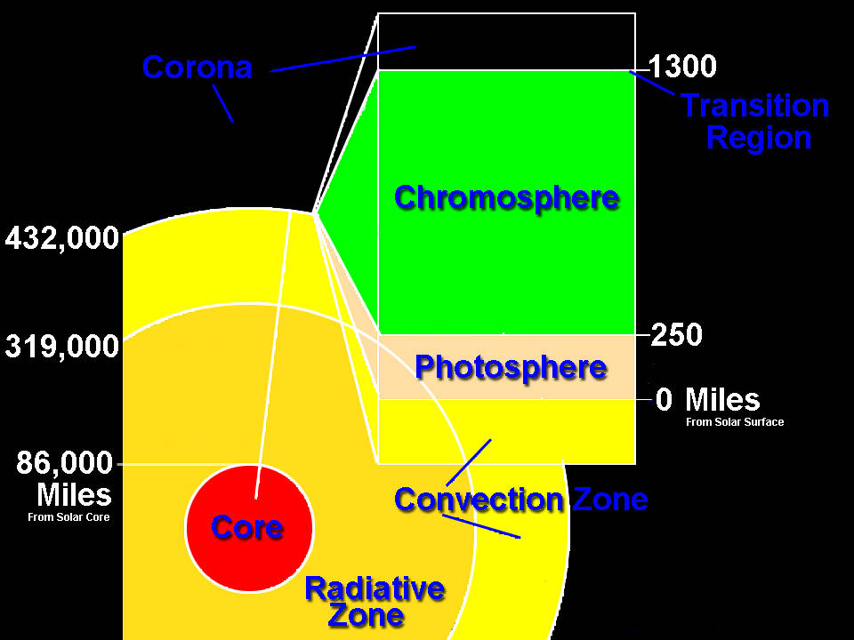
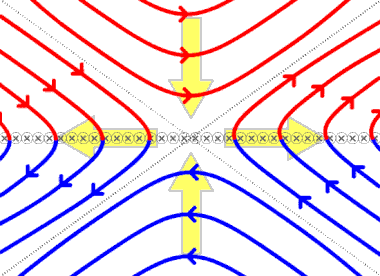
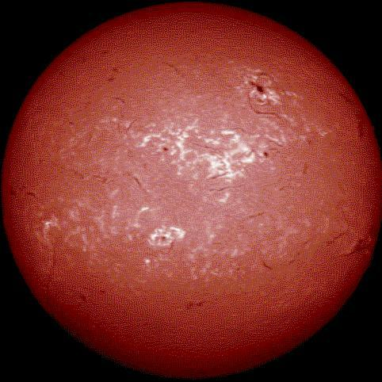
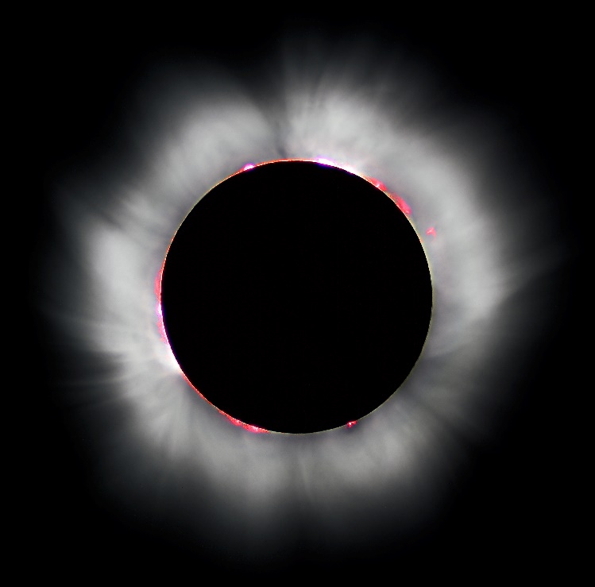
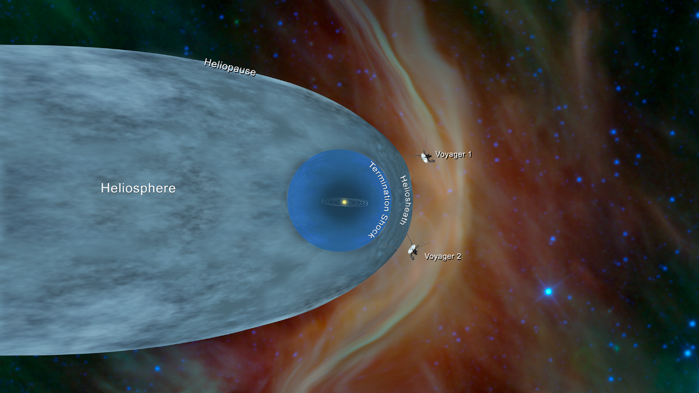

Jainan Tandel Posted on February 19, 2020
Tried all, Achieved most, Perfected many, Love some! (Physics (particularly Astrophysics), Programming, Music, Sports, Photography (Editing), Sketching, etc.!)
The Solar surface
So, before moving more into the subject, I would like to first clear it, that the Sun doesn’t actually have a definite surface as such, as it composes only of hot (very hot) gases and plasma. The surface is what we perceive to be a boundary when we observe the sun. However, we just take the topmost layer of the sun, the photosphere, to be the surface, whose light reaches us and is not absorbed or reflected back in by the envelope of gases. (Mind it, the sun has six zones – the core, the radiative zone, the convective zone, the photosphere, the chromosphere, and the corona (or atmosphere), however the photosphere is the deepest layer visible, beyond which the Sun goes opaque, and hence it is considered the surface.) So now, let’s see some spectacular facts about the star of our system.
The photosphere begins from about 7 lakh kms from the Sun’s centre, till about 400 km, beyond which the chromosphere begins. A very interesting phenomenon of these topmost two layers is that unlike from the core to the surface of the sun, the temperature increases with altitude rather than decreasing. In fact, the temperature in the photosphere ranges just from 6000 K to 4000 K, while the chromosphere reaches 8000 K. More surprisingly, the temperature suddenly surges to more than half a million Kelvins in the corona. The reasons for this are as yet unknown, but is most probably explained by magnetic reconnection. Magnetic reconnection is when two magnetic fields of antiparallel directions collide, merging and going out sideways, taking matter particles with them and ejecting a lot of heat in the process. The only thing is, it happens way faster than predicted by current calculations.
Next comes the chromosphere. It is invisible by the naked eye (don’t try to check it without protective glasses!), and requires sophisticated instruments to see it, due to the overwhelming brightness of the photosphere beneath. However, its reddish colour is often revealed during solar eclipses, the only time when one can see it and the corona (which appears like a golden crown, hence the name). With not that many prominent features (except maybe plages and Moreton waves, a subject of their own), this region is yet to undergo much study, although scientists are always looking at it to predict space weather and observe solar prominences (loop-like extensions of matter from sun’s surface).
The sparse, but extremely hot Corona is the subject of a greater awe. With temperatures, ranging from a half to a few million Kelvins, this volume is ruled by magnetic fields, solar flares and mass ejections.
In fact, even if humans could possibly design some object that could withstand the surface temperature of the sun, it would never get anywhere close to the surface before being vaporised in the corona itself. It has no definite outer boundary, and particles continuously escape it, leading to what we call, solar wind, a constant flow of particles from the sun. Solar wind consists of matter from solar plasma , mostly consisting ionised H and He (i.e. alpha particles, protons and electrons), along with traces of heavier (C, O, N, Si, S, Fe, etc.) elements. Sometimes, the wind surges momentarily due to solar surface eruptions. These particles, if they reach the Earth’s surface, are a potential risk to life on Earth. However, as these particles are ionised, and hence charged, they get deflected by our planet’s magnetic field, preventing the damage they can cause. The wind continuously moves outward until a certain distance, after which it goes sideways flowing towards the tail of the heliosphere, whose shape is apparently due to a bow shock , a phenomenon occurring when interstellar wind meets sun’s magnetosphere, forming a shape similar to when Earth’s magnetosphere interacts with solar wind.
Image: Artist’s impression of the Heliosphere, along with estimated locations of the twin Voyagers Credits: NASA/JPL-Caltech (Source) As we can see, just as Earth’s magnetosphere protects our planet from the solar wind, the heliosphere, protects our Solar system from interstellar winds and cosmic radiation. Zooming in on the sun’s surface, we observe bright spots with dark boundaries on the sun’s surface, called granules, which look like cells.